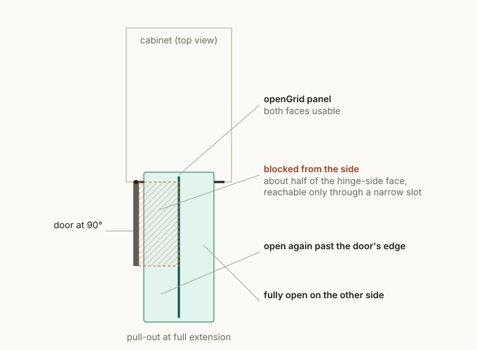
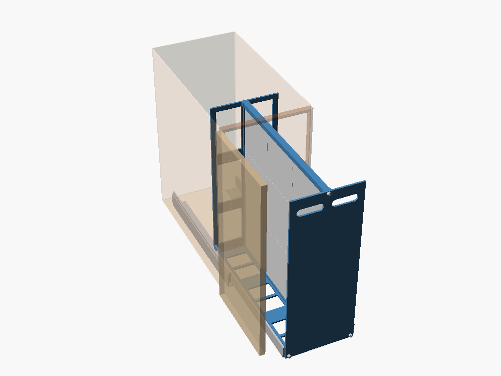
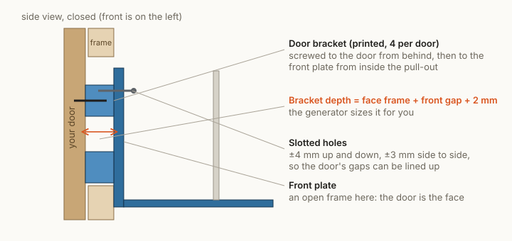
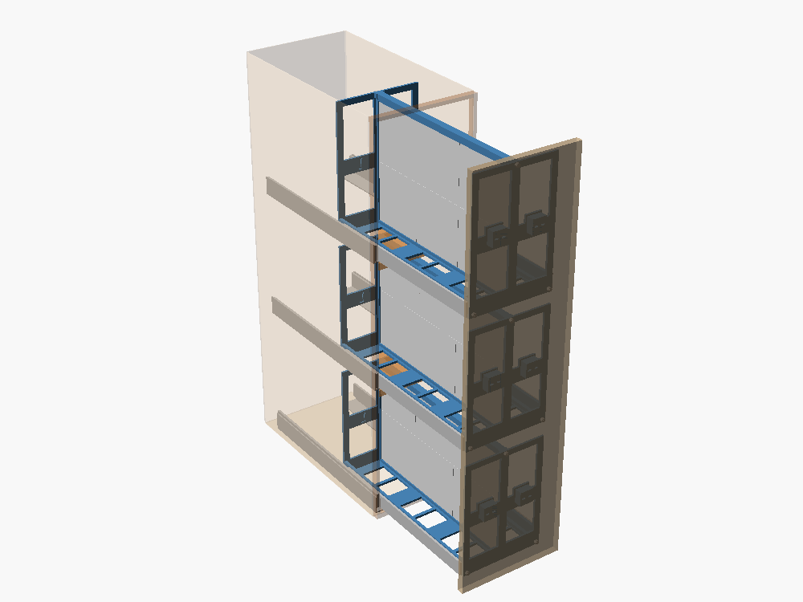
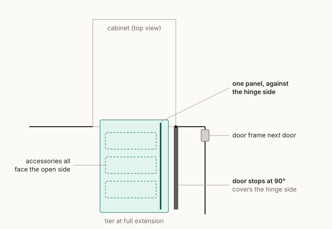

Mounting your door on the pull-out
In door-mount mode (the default), your cabinet door comes off its hinges and screws to printed brackets on the pull-out's front plate. The door becomes the pull-out's front, like a drawer. This is what commercial base-cabinet pull-outs do.
Why mount it
Most cabinet hinges only open to about 90°. With the door hinged, it stands right beside the pulled-out shelf and covers about half of the hinge-side face. What hangs there is only reachable through a narrow slot between the door and the panel.

Mounting the door fixes that completely, and it also gives you width back: with no hinges inside the opening, the frame doesn't have to narrow itself to dodge them.

How it works

- The brackets fill the gap between the back of your door and the front plate. The generator sizes them: face frame depth + front gap + 2 mm.
- Each bracket screws to the door with two wood screws through slotted holes (±3 mm side to side), then to the front plate with two screws from inside the pull-out, through slots in the plate (±4 mm up and down).
- The door closes against the face frame like it always did, and the slides take the weight. A typical cabinet door is far under the 100 lb (45 kg) slide rating.
- In door-mount mode, the front plate is an open frame instead of a solid sheet, since the door is the face. That saves a lot of plastic.
Cabinets with fixed shelves
With fixed shelves, each gap gets its own pull-out (tier), and the door screws to all of them. They become one tall unit that pulls out together, with the shelves staying put inside.

That works because the generator gives every tier:
- the same slide length (the shortest any tier can take), so they all travel the same distance;
- the same front plane (the deepest shelf setback wins), so the door touches every bracket;
- one row of brackets instead of two, since the load is shared.
If one tier ends up sitting back from the door after install, put a washer or two behind its brackets.
Fitting the door
The full steps are in Assembly. The short version, which is the same trick the commercial kits use:
- Screw the brackets to the front plate, in the middle of their slots.
- Put a square of double-sided tape on the face of each bracket.
- Push the pull-out closed, hold the door in its closed position with even gaps, and press it on.
- Pull out gently. Unscrew the brackets from the plate (they stay stuck to the door), screw them to the door, then screw them back to the plate.
- Use the slots to fine-tune the gaps.
Taking the hinges off
Most modern concealed (Euro) hinges unclip from their mounting plates: push the lever or tab at the back of the hinge arm. Remove the mounting plates from the cabinet too, or they'll catch on the brackets. On face-frame cabinets the hinge cups stay in the door; they don't get in the way.
When to keep the door hinged
Choose Keep it hinged in the generator if:
- Your door is inset (it sits inside the face frame opening rather than in front of it). Door mount assumes an overlay door and doesn't support inset doors yet.
- One door covers more than the pull-out (for example, a sink base where the pull-out only fills half).
- You want to be able to open the door without pulling the shelf out.
- You have fixed shelves and want to pull out one tier at a time.
In keep-hinged mode the generator dodges your hinges, and the front plate is solid with the handles you pick: slots, printed bars, arches or knobs, or a store-bought pull. Handles that stick out move the pull-out back so the door still closes. To reduce the blocked-side problem, swap to 170° hinges: they're widely sold for both face-frame and frameless cabinets, use the standard 35 mm cup, and let the door swing flat out of the way. Match your door's overlay when you buy them.
No door
Cabinet without a door, or you're leaving it off? Choose No door. The front plate is the face, with the handles you pick, and there are no hinges to dodge. Unscrew any leftover hinge plates or catches before you fit the rails.
When the door only opens to 90°
Sometimes the door can't swing further: a wall, an appliance or the next doorway's frame stops it. Then the open door stands right beside the pulled-out tier and you can't reach that side at all.
Tell the generator: How far does the door open? → Only to 90°. The pull-out next to the hinges then gets a single openGrid panel tucked against the hinge side, so every accessory faces the side you can reach. If there are two pull-outs side by side, the other one pulls out clear of the door and stays two-sided.

You lose the hidden face of the panel, so a one-sided tier holds a bit less. Since nothing hangs on the back, openGrid Lite boards are enough.
Choosing sides for each pull-out
Every pull-out (in every tier) has its own setting under Your pull-out → Sides: Auto, Both, Left only or Right only. Use it for a pull-out next to a wall or a fridge, or to make a two-sided one single-sided on purpose.
Auto picks:
- One-sided for the pull-out next to the hinges of a kept door that only opens to 90°.
- Facing outward for side-by-side pull-outs on a mounted door. They come out together, with only about 1½″ (40 mm) between them, so nothing on the inner faces would be reachable.
- Both sides for everything else.
Pull-outs set the same way share print files.